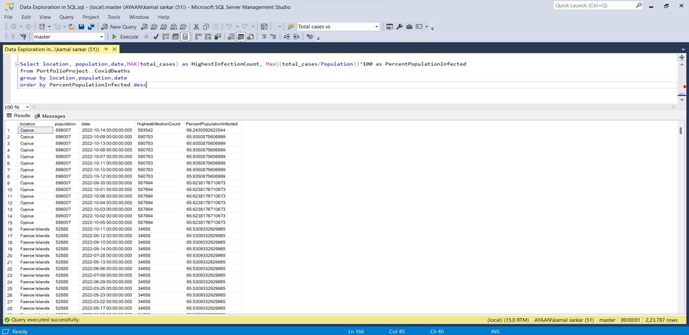
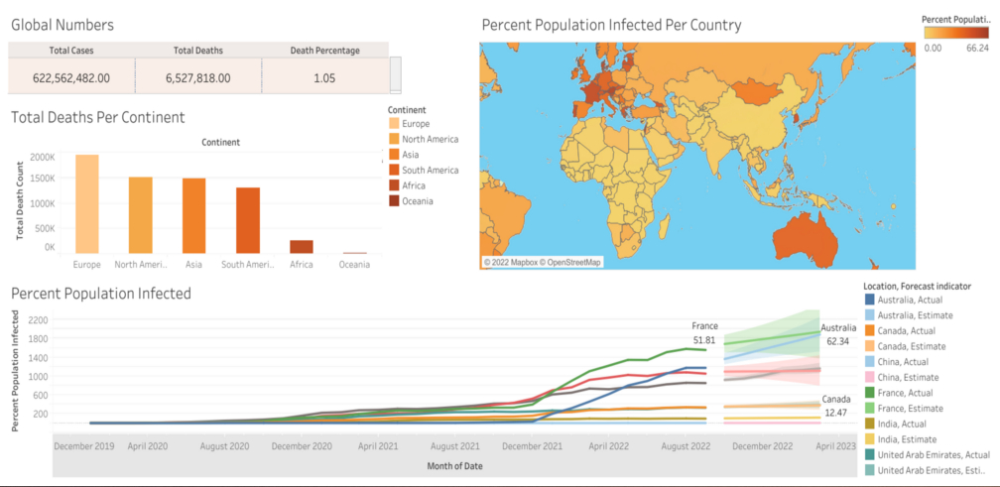

ANIL SARKAR
Résumé
Intro
Detail-oriented data analyst with a strong background in data analysis, visualization, & data-driven decisionmaking. Proficient in using tools like SQL, MS Excel, Salesforce CRM, Power BI, & Python. Experienced at creating and maintaining dashboards that have improved operational efficiency and the decision-making process. Passionate about leveraging data to drive business growth and support strategic initiatives. Check out my Naukri profile.
Skills
Technical Skills
- SQL (MS SQL Server)
- MS Excel Advanced(Pivot Tables, VLookup)
- CRM (Salesforce)
- Programming Language (Python, Java Script, C)
- Data Analysis and Visualization (Power Query)
- Data Research (ZoomInfo, D&B)
Soft Skills
- Communication
- Problem-solving
- Data Research
- Data Management
- Teamwork
Work Experience
Data Analyst
Tricentis March/2023 - October/2023
Roles and Responsibilities
- Responsible for creating new accounts in Salesforce CRM and managing CRM data. Managed ad hoc projects to maintain data on CRM.
- Extensive experience with Salesforce CRM, including bulk updating records, deduplication of accounts, and data enrichment.
- Automated account updates in Salesforce CRM using Python scripts and MS Excel enhancing overall efficiency by 35%.
- Creating reports and dashboards in MS Excel and Power BI for visualization and business decisions
- Hands-on experience with ZoomInfo, D&B for researching hierarchy changes in the organization and updating them in CRM to maintain data accuracy
Data Analyst
eClerx Services Limited May/2022 - October/2022
Roles and Responsibilities
- Experience with data cleaning using MS Excel, and updating cloud-based Global Database Server.
- Written SQL scripts to manage the database. Perform import, export, and restore from the database.
- Creating regular reports using MS Excel to track progress and improve business decisions.
- Collaborated with the operations team to identify best practices and opportunities to streamline processes.
- Perform root cause analysis on internal and external data and processes to answer specific business questions.
Digital Marketing Executive
Boomtown Internet Group March/2020 - July/2021
Roles and Responsibilities
- Conducting on-site and off-site analysis of web SEO competition.
- Using google analytics to conduct performance reports regularly.
- Leading keyword research and creating high-quality SEO content.
- Predicting future trends and assisting with blog content.
Academics
MCA (Software Engineering)
08/2017 - 08/2020
Guru Gobind Singh Indraprastha University, New Delhi
Projects:- 1) Attendance Management System (Android) 2) IoT Protocols (Term Paper)
BCA
06/2013 - 06/2016
Chitkara University, Chandigarh
Projects:- 1) Hospital Management System (Java,MySQL) 2) Coaching Mangement System(V.B 6,SQL)
Personal Projects
COVID-19 Global Data Set Exploration Using SQL
The Project COVID is a Data exploration project in SQL. In this case, the data to explore is COVID-19's global report. The report includes information of new cases, total cases, new deaths, total deaths, new COVID-19 tests, total COVID-19 tests, and vaccinations done etc. The analysis is done on the original unstructured data set "owid-covid-data.csv" file and two separate data sets are extracted from it:- 1) Covid-Deaths.xslx 2) Covid-Vaccination.xslx These two data sets are loaded in SQL database and separate queries are performed in order to make analysis and get meaningful data from it. All the queries ran are stored in Data Exploration in SQL.sql file 
COVID-19 Global Data Visualization In Tableau
Visualization analysis of the meaningful data extracted from the large unstructured data set about global impact of COVID-19.
Various queries are run in MS SQL and the results are recorded in separate excel sheets which are then loaded in Tableau Public for visualization.
Visual representation of data can be self-explanatory and it shows more data in less space.
